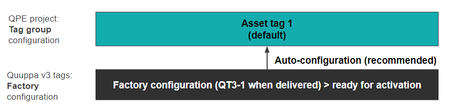
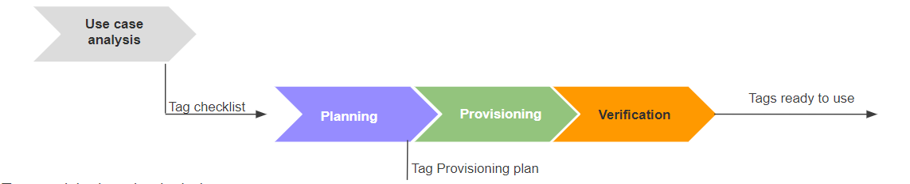
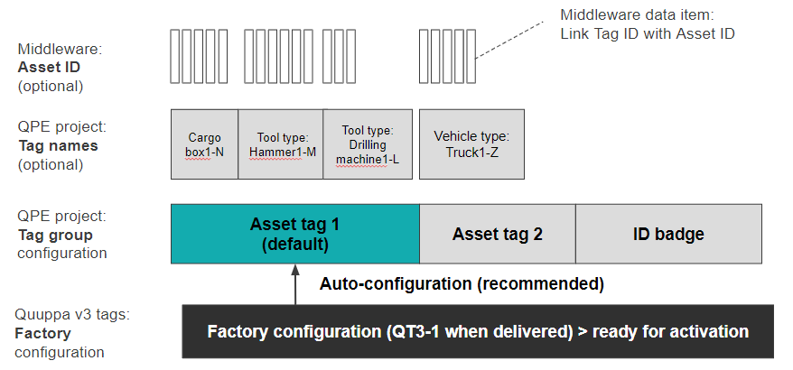

Provisioning Quuppa v3 tags
The Quuppa Tag management system has been enhanced for increased reliability and security through the implementation of the new Quuppa v3 protocol. The QT3-1 stands out as the first Quuppa v3 reference Tag, with subsequent Quuppa v3 partner tags set to be introduced soon.
Quuppa v3 Tag provisioning
From the IoT context, device provisioning refers to the process where a device is configured to a state in which it can be handed off to an end-user, or end-user team, for their specific use in a functional manner.
Likewise, for Quuppa tags, the tag provisioning refers to the process where a tag is configured from its factory settings to a Quuppa project specific configuration. This is an important step to ensure optimal performance, both for tags and for the Quuppa RTLS system in specific use cases.
As a part of the Quuppa RTLS system, Quuppa v3 tags provide features that make the tag provisioning process as seamless and efficient as possible. The primary goal is to minimize the manual work and to maximize the scalability of the Quuppa RTLS system.
Best practices
The most optimal Tag provisioning process depends on the specifics of the RTLS project, e.g. what kind of assets are tracked, how and when the tags are attached to the assets, and how the data is eventually managed in the backend system. The best practices for the tag provisioning process list the main points to consider when selecting the most suitable solution for your project.
Auto-configuration for Quuppa v3 tags
The most straightforward way to provision your Quuppa v3 tags is to use the auto-configuration feature. The preconditions for using the auto-configuration feature are:
- The default Tag Group is defined and in use in your Quuppa project.
- See QT3-1 Quick Start Guide for instructions
- The tags can be activated within the range of Quuppa locators of the project
- The Quuppa project is an online project
With this solution, even a large number of tags can be provisioned with minimum effort, as all your Quuppa v3 tags are configured by the Quuppa system (QPE) to the pre-selected configuration.

Additionally, after the Quuppa v3 tags have been provisioned and are visible in your QPE project (verified by using the QPE Tag table), you can further manage the tags and configurations by using QPE API commands. This does not require project file modifications with the QSP nor file synchronization in the QPE.
From planning to verification: best practices for Quuppa v3 Tag provisioning
It is recommended to plan the tag provisioning process in advance to make sure all of your project specific requirements are taken into account at the right time in the process. The main steps are:
- Planning
- Provisioning
- Verification

As the first step in the overall RTLS project journey, the use case analysis results as very important input information for planning the tag provisioning process. For example, the exact requirements for the tags should be defined, and the feasible tag(s) tested and selected in practice. In many cases, the Quuppa QT3-1 tag is a good starting point and used here to describe the Quuppa v3 provisioning in detail.
Before starting the planning phase, it’s recommended to collect the information available from the Quuppa project Use Case analysis phase. The Tag provisioning checklist summarizes the key aspects necessary for the planning phase:Tag provisioning checklist
Project information:
- Is your project an online project? Yes/No
- Are you provisioning Quuppa v3 tags for your own Quuppa project? Yes/No
If both answers are Yes, go forward in the checklist. Otherwise, take a look at sections
- Quuppa v3 tags in offline projects
- Tag ownership - Association to the customer
Context of the tags
-
What are you planning to track? Are all the assets tracked in the same way? Yes/No
If one tag group is enough > recommendation: use auto-configuration
Asset type(s): one or multiple types of assets?
- Define the asset types
-
How are you planning to mount the tags to the assets?
Recommendation is to use a method that allows tag activation in the production site
-
Can you activate the tags in the production site? Yes/No
If it is not possible to activate a tag in the final site with a button press, then pre-configuration is needed for the scalable provisioning process
-
Are the trackable assets unique and have an asset ID? Yes/No
Coupling of tag ID with the asset ID defined by the Middleware or backend:
- Is the backend system using the data based on the asset ID and is it necessary to couple the tag ID with the asset?
- Or are the tags tracked as stand-alone tags without any association to the asset ID?
- If the coupling is made between the tag ID and asset ID, how often is the de-coupling or re-coupling done? a) never, b) to replace a tag, c) monthly/daily/more often?
Provisioning process and verification:
-
Provisioning batch size: a) tag-by-tag, b) by 5-packs, c) by a very large tag batch (all at once).
- Are the tag IDs coupled with the Asset ID information at the same time the provisioning is done?
- Or is the provisioning done first, and the coupling to Asset ID later?
-
Can you verify the provisioning status after every batch, and what is the primary verification method?
- What is the method to verify the correct coupling of tag ID and Asset ID
Quuppa v3 tags in offline projects
In case you are provisioning Quuppa v3 tags for an offline project, it is necessary to keep in mind the QPE must have the security keys for the Quuppa v3 tags in the project. Otherwise, the QPE is not capable of tracking and managing the tags.
In practice, there are two ways to provide the required key files for the QPE in an offline project:
- If the QPE is connected to the Quuppa Customer Portal before the offline use, the QPE will automatically receive the keys for the Quuppa v3 tags owned by your organization.
- If the QPE is not connected to the Quuppa Customer Portal before the offline use, the necessary keys can be downloaded from the Portal similarly to other offline project files (e.g. license file):
- From the QCP, select the Download files for QPE v8.5+ button on the Project Key Details page.
By default, the tag key file (.qtaginfo) includes keys for all the tags owned by the customer.
New tags to an offline project:
If new tags are purchased and need to be added to your offline project, an updated tag key file needs to be downloaded from the QCP and transferred to the QPE, as described above.
Alternatively, the QPE needs to be connected to the QCP to receive an up-to-date tag key list.
Tag ownership - Association to the customer
Quuppa v3 tags include a security layer which provides the customer with the means to fully control the use of their tags. Encryption of the tag data and commands prevent erroneous and unwanted use of tags. The communication is protected using tag specific keys which are provided to the Quuppa RTLS instances (e.g. QPE, QSP) authorized to position and manage the tags. The authorization is automatically provided to the instances associated with the tag owner in the Quuppa Customer Portal.
Visibility in the customer’s QPE projects
By default, all the tags owned by the customer are visible and authorized to be used in all of the customer’s QPE projects. This is also the recommended approach for all projects.
White-listing
In certain use cases, there may be a need to limit the use of specific Quuppa v3 tags so that the tags are visible only in a specific Quuppa project(s). Therefore, it is possible to white-list specific tags for a specific project. However, this is not necessary for the majority of projects. In case white-listing is needed for your specific Quuppa project, please contact support@quuppa.com.Shared use of Quuppa v3 tags
The permission to use the tags can be further delegated by the owner to other users. This is done by white-listing the tag IDs in the Quuppa Customer Portal. For white-listing of tags for a 3rd party Quuppa project, please contact support@quuppa.com.Tag groups
Depending on the targets of your Quuppa RTLS project, different aspects need to be considered in the tag provisioning process. For example, the quantity and the context of tags may play significant roles.
The auto-association method is a very scalable solution for provisioning large quantities of tags, especially when the tagged objects can be tracked as one tag group with equal configurations.
However, usually the project includes different types of tagged objects (personnel, tools, machinery, vehicles, etc) which may require tag group specific configurations. In that case, the recommended way is to provision the tags using auto-configuration method to the default configuration, and to move into their specific tag group after being detected by the QPE system.

The basic principle is that the Tag group configuration defines all the relevant parameters. Thus, when the Tag ID belongs to the right Tag group and is visible to the QPE, the Quuppa system can manage the configuration automatically as a background process.
The Tag group also automatically generates the default TagName for the tag ID (for example, Asset Tags_001 with the increasing index at the end). However, the TagName can also be modified to reflect the actual asset type and it’s not necessary to create dedicated Tag Groups per asset type if the Tag group configuration is the same for different asset types.
Using the QPE API, new tags can be added to tag groups without File synchronization of the Quuppa project.
As a back-up solution, the QSP (and focusing locator) can be used to set the QT3-1 tags into tag groups. The tag groups can be modified in the project file, and in force after submitted to QCP and project file synchronised to the QPE.
Persistence of tag groups and configurations
exportTags >
Example API command to “Save” the tag groups: /qpe/exportTags?filename=autostart
With this autostart file name, the tag file generated for the project with QSP is overridden.
Tag Activation
Tag activation is the step needed to wake-up a tag, after which it can be configured to the use case specific configuration.
Button press
Traditionally, Quuppa tags are activated by pressing the tag’s button. Activation can be verified based on the tag LED turning on.
Pre-configuration
If tags need to be mounted to assets in a way which prevents activation with a button press, pre-configuration of the tags needs to be considered. Pre-configuration should be done before the assets enter the Quuppa project site (i.e. production site).
The recommended way to pre-configure Quuppa v3 tags is to set-up a small Quuppa project with one locator and a QPE instance. By using the auto-configuration method, all the tags can be pre-configured to Asset tag configuration (recommended) before the tags are mounted to the assets. Asset tag configuration is the recommended configuration, as the production site QPE will detect the tags even if the tags are stationary or moving.
Channels in use
Quuppa QT3-1 tags are delivered with the factory configuration which utilizes both Quuppa proprietary channel (2481 MHz) and BLE channel 37 (2402 MHz). This allows provisioning of the QT3-1 tags independently from the channels selected for use in the Quuppa project.
Quuppa System Release 9.0 supports dual-channel operation where tracking is done on both Proprietary and BLE channels. The project’s tag groups will be configured accordingly.
Verification of tag provisioning
The main goal of the verification phase is to make sure all the v3 tags have been provisioned according to the plan. The details to verify are:
-
Tag ID: all the targeted tag IDs should be visible in the Tag table in the QPE (tagid)
-
Last seen packet timestamp: lastSeenTS is fresh enough (less than X seconds)
-
Tag group: tagGroupName values are correct for different tag IDs meaning the tags are in the correct tag groups
-
Configuration status is correct: configStatus = done means the configuration is ready
-
Current configuration value is equal to the targeted configuration value:
-
Optional: if the TagName is used as a specific identifier, then the correctness of that field is also necessary.
As the first solution and in smaller projects, the most practical method to verify the tag provisioning is to use the QPE tag table to check the aforementioned fields for the provisioned tag batch. Depending on the chosen provisioning batch size, the tag table can be reviewed per tag, per a 5-pack or a larger batch quantity.
In large projects, a more automated solution improves the process efficiency and validation of the overall RTLS project. Therefore, it’s worth considering the following options:
-
Script for QPE API to verify the provisioning status: use Get tag data API call
-
QPE Tag logs can be used to verify the provisioning status / results
Coupling a tag ID to an asset ID
Depending on the overall system architecture of your solution, it may be necessary to consider how the Quuppa v3 tag ID is associated with the middleware database and backend. As part of the provisioning plan, the recommendation is not only to plan for the physical attachment of the tags to the assets, but also the coupling of tag and asset data.
QRE example:
-
Using a barcode scanner, read the tag ID and asset ID and export to a CSV file.
-
Import tags from the CSV file to the QRE.
-
Depending on the process, decoupling may be also needed in the backend.
Coupling and decoupling process
Depending on the business environment where the Quuppa RTLS solution is used, the coupling process may vary significantly. The main options are:
-
No coupling: Tag ID is never coupled to an asset ID in the backend database
-
Coupling once: Tag ID is coupled with an asset ID once as a step in the provisioning process and the coupling remains untouched until the tag is decommissioned
-
Repeated coupling-decoupling: Tag ID is coupled to an asset ID for a period of time and then de-coupled at the end of the process so that the tag can be used with another asset.
If the business process utilizes repeated coupling and decoupling of tags, it’s worth planning in advance how the tag IDs and asset ID database are managed efficiently.
Benefits of the Quuppa v3 tags and provisioning
More reliable
Quuppa v3 tags use an enhanced communication protocol which makes the configuration and commanding of the tags fast and reliable.
Quuppa v3 tags periodically send their configuration. This allows reliable verification and management of the tag configurations as a background process. The QPE can monitor the configuration and check if the targeted tag group or configuration changes. There is no need for API calls and a tag can be updated whenever the tag is seen by QPE.
Tag configuration (parameters in the tag) > QPE configuration parameters > parameters that are only in the QPE and not in the tag firmware.
Button press reliability
Button press info is sent in Quuppa v3 data packets, which are more reliable than those used in Quuppa v1.